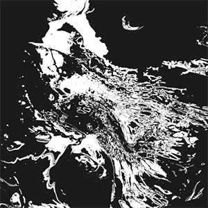
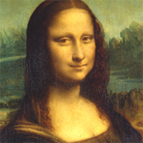
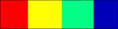
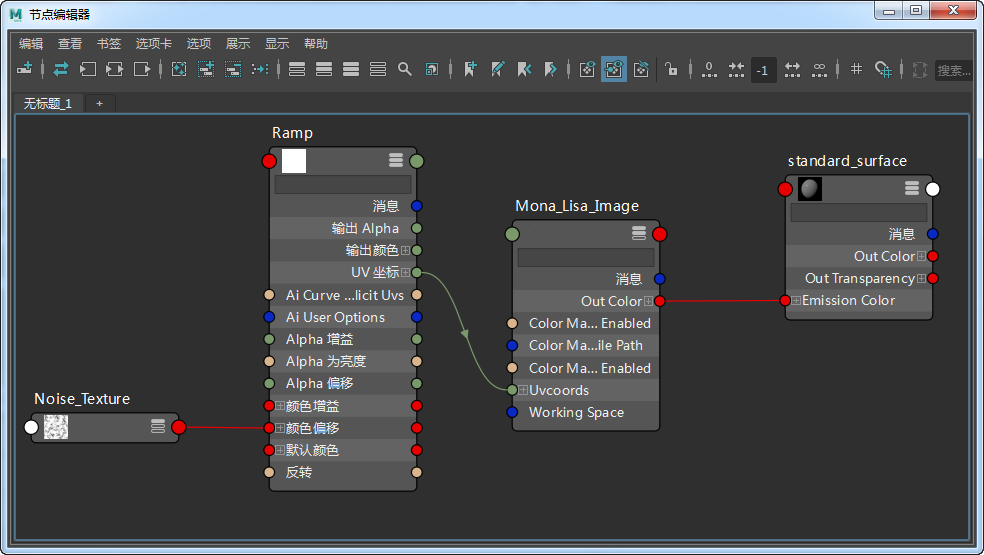
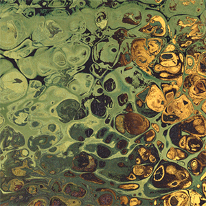
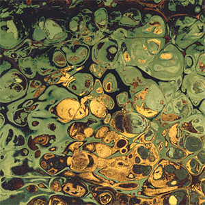

使用 UV 坐标重映射图像
 |
 |
本简单教程介绍如何使用图像*着色器的 *uv_coords 属性重映射图像，生成抽象图案的扭曲效果。要查看更多示例，请单击此处。
要下载场景文件，请单击此处。
- 首先，为一个多边形平面指定一个 standard_surface 着色器。
- 将 standard_surface 的“自发光”(Emission)*增加到 1。将 *base_weight 和 specular_weight 减小到 0。
- 将一个图像着色器连接到 *emission_color，然后向 *image_name 添加一个文件纹理。在本例中，我们使用了迷人的蒙娜丽莎画像。

- 创建一个 rampRGB 纹理，并将其连接到图像着色器的 *UV_coords。将渐变的 *u_coord 连接到图像着色器的 *uvcoordsY。将 *rampRGB 的 v_coord 连接到图像着色器的 uvcoordsX。
- 将渐变类型更改为“四角渐变”(Four Corner Ramp)。
- 为渐变创建四种不同的颜色：“红”(red)、“黄”(yellow)、“绿”(green)和“蓝”(blue)。

您可以通过调整渐变的 HSV 值来更改图像的重映射方式。
- 将文件或噪波*着色器连接到 *rampRGB 的 color_offset。这将驱动扭曲效果。
您也可以在文件纹理与渐变之间添加*范围或重映射*着色器以进一步控制效果。

最终的着色网络
图像：UV 坐标
在图像*着色器的 *UV_coordinates 中，有控制设置用来进一步更改纹理贴图的位置。设置动画后，这可以生成有趣的效果：
|  |  |
U 向偏移（左侧）。 V 向偏移（右侧）。
- 对连接到用来扭曲图像着色器的纹理的曝光进行动画渲染（使用 *color_correct*），将生成最终结果。

曝光（-10 到 0）